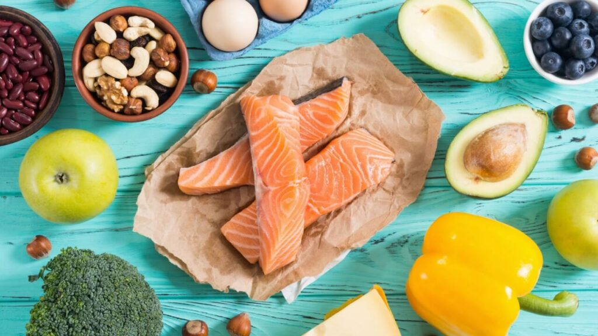

Dietas

Low carb
Trabalha com dois princípios básicos. O primeiro é reduzir a quantidade de comida no café da manhã, almoço, lanches e jantar.
Cetogênica
Foca em restringir as refeições a, basicamente, dois tipos de alimentos: os que têm proteínas e/ou gorduras boas.
Hiperproteica
Consiste numa alimentação com um maior volume nutricional, sendo que esse aumento diz respeito aos alimentos ricos em proteína

Bulking
O objetivo aqui é expandir o físico, potencializando o aumento da musculatura.